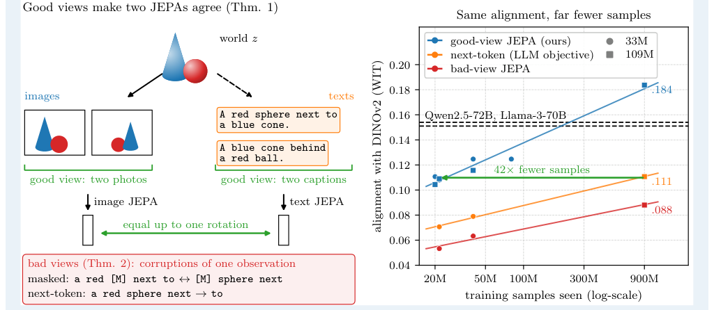
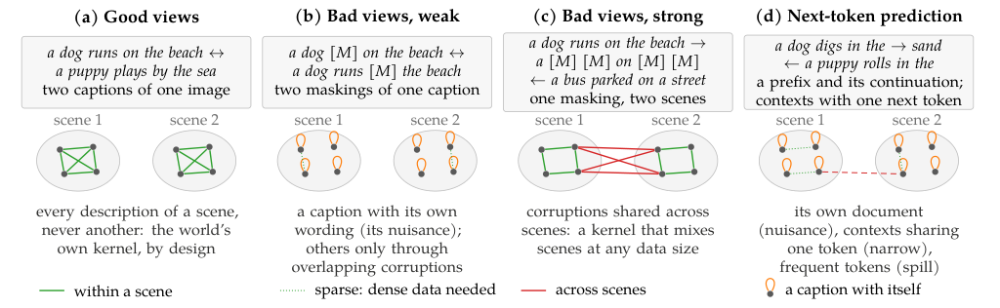
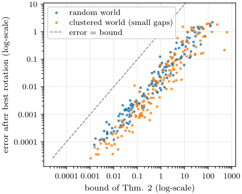

正样本关系决定表示的共同结构
作者Randall Balestriero · Yann LeCun
版本arXiv:2610.39302v1，2026-10-29；检索与精读日期 2026-11-03
来源arXiv 记录 · 完整原文 · PDF · 官方代码
阅读范围全文 37 页，含附录 A–C、15 幅图与 18 张表；核对官方仓库关键实现。未重训神经网络。文中页码均指 PDF 页码。
核心洞见训练时把哪些观察视为同一个场景，决定表示保留共同内容，还是保留某次观察特有的细节。
从 109M 的实验现象进入
一个 1.09 亿参数的文本编码器，在 WIT-1024 上与 DINOv2 的 mutual 10-NN 得分为 .184；Qwen2.5-72B 为 .154。两者参数量相差约 660 倍。这是本文最吸引人的现象，但先把测量对象放稳：这里比较的是两种表示对样本邻近关系的判断有多相似，不是语言生成、推理或知识能力。一个专门训练场景表示的小模型，可以在这个指标上超过一个通用语言模型，两件事完全相容。【文中有据：表 3，第 12 页；表 16，第 34 页】
作者真正想改变的判断是：要让语言和视觉表示更接近，是否只能不断加大语言模型。本文给出另一条路，把训练目标从预测文字序列，改为使同一场景的不同文字观察得到相似表示。规模仍然有用，但正样本的定义决定规模花在了哪些信息上。
这里需要分开两篇论文。2024 年的 The Platonic Representation Hypothesis 由 Minyoung Huh、Brian Cheung、Tongzhou Wang、Phillip Isola 提出；LeCun 不是该文作者。本次精读的是 Balestriero 与 LeCun 在 2026 年的后续工作，目前 arXiv 记录列出 v1，尚未提供后续修订比较。

原图 1，第 1 页。左边提出共享场景的直觉，右边给出样本效率现象。右边的 42× 是两个训练点的样本数比值，后文会拆开它的分母。
阅读本文时可以沿一条依赖关系前进：先弄清表示相同的含义，再看正样本怎样画出一个图，再看这个图的主方向怎样成为表示，最后检查真实训练离这套数学有多远。这样读，定理和实验各自承担的论证会很清楚。
同一表示容许坐标旋转
假设有四个世界状态，分别由两个独立属性 $a,b\in\{-1,+1\}$ 描述，且四种组合等概率。图像编码器输出 $u=(a,b)^\top\in\mathbb R^2$。文本编码器输出 $v=(-b,a)^\top$，也就是把每个点旋转 90°。二者的坐标值不同，四个状态之间的距离和夹角却完全相同。只需对全部文本统一转回 90°，每个状态就会重合。这正是本文的 up to one rotation。
写成矩阵，$v=Qu$，其中
$$Q=\begin{pmatrix}0&-1\\1&0\end{pmatrix},\qquad Q^\top Q=I_2,\qquad \|Qu_i-Qu_j\|^2=\|u_i-u_j\|^2.$$
最后一个等式来自 $Q^\top Q=I$，说明这个变换不改几何关系。论文使用 $O(k)$，即正交群；其中也包含反射，严格说比日常语言的旋转更宽。在以下讲解中，旋转沿用论文用语，数学上均按正交变换理解。
拖动校正角度，看同一组文本点何时与图像点重合。图中数据为四状态示意，初始文本相对图像转了 60°。
示意图。蓝色为空心图像点，紫色为文本点；四个点统一移动。只允许一个全局变换，不能为每个样本分别找一个变换。
这比存在任意映射强得多。若允许一个足够复杂的函数逐个记忆四个状态，几乎任何两套表示都能被连接；若一个正交变换就够用，说明两边已经形成相同的距离结构。另一个常见混淆是把统计分布相同当作逐状态相同。两堆点都均值为零、协方差为单位阵，仍可能把具体场景放在完全不同的位置。本文的定理涉及逐状态对应，实证指标则从邻居、核结构和跨模态检索三个角度近似检查它。
【推断】实际复现时若任意线性层能配准而正交映射不能，先查两个空间的各向异性和维度。白化后明显变好，可能是坐标伸缩造成差距；白化仍无改善，才更支持几何结构本身不同。白化会放大低方差方向的噪声，因而不能自动当成更好的答案。
两份描述与两份遮盖
把世界状态记为 $z$，某次观察特有的细节记为 nuisance $\nu$。一张照片既包含场景，也包含拍摄视角和光照；一句描述既包含场景，也包含措辞和句式。本文把观察写成 $x=g_m(z,\nu)$，$m$ 是模态。nuisance 的含义取决于任务：相机位姿对机器人行动可能很重要，但若目标是与一句不含位姿的描述匹配，它就属于跨模态无法共享的变化。
设场景是一只狗在海边奔跑。描述 A 为 a dog runs on the beach，描述 B 为 a puppy plays by the sea。两份描述能共享场景，却不共享全部词语。把它们作为正样本，会奖励对措辞变化保持稳定的表示。反过来，对描述 A 做两次遮盖，两份输入仍共享 dog、beach 这套用词以及原句的句式；这些细节也能帮助降低配对损失。
| 视图 | 配对来源 | 共享的信息 |
|---|---|---|
| Good views | 同场景的不同观察 | 场景关系；理想模型中干扰独立 |
| Bad views | 同一次观察的不同扰动 | 场景与原观察特有的干扰 |
| Next-token | 同一序列的前缀和下一个 token | 语义、措辞、风格与序列规律 |
这里的 good / bad 是作者针对跨模态几何一致性定义的技术术语。它不意味着图像裁剪或 next-token 在其他任务上不好。事实上，大多数实验采用的 DINOv2，按本文定义也属于 bad-view 一侧，因为它用同一照片的裁剪做正样本。【文中有据：§2.3，第 4–5 页】

原图 3，第 6 页。读图重点是连线：弱扰动可能连不齐同场景的不同描述；强扰动又可能把不同场景连起来。增加数据能补足前一种连通性，无法自动修复后一种错误关系。
good views 也有一个容易被忽略的成本：必须知道哪些观察属于同一场景。Flickr30k 的五条人工描述按图像分组；Recap-DataComp 的三条文本按网页图像分组。文本编码器训练时可以完全不读像素，但训练样本的组织已经包含了场景分组信息。本文最有用的命题因此是给定这种分组，采用怎样的目标能更有效地利用它。【文中有据：§3，第 7 页；§7，第 15 页】
正样本画出一个图
现在把语言和图像暂时拿走，只留下有限个世界状态 $\mathcal Z$。每个状态是一个节点，正样本配对概率是连线权重。$\Pi_{ij}=\pi(z_i,z_j)$ 表示把状态 $i,j$ 抽成正样本的联合概率；$p_i=\sum_j\Pi_{ij}$ 表示节点被看到的概率。论文要求 $\Pi$ 对称，且两边边缘分布都等于 $p$。
| 符号 | 形状 | 含义 |
|---|---|---|
| $\Pi$ | $n\times n$ | 正样本联合分布，$n=|\mathcal Z|$ |
| $D=\operatorname{diag}(p)$ | $n\times n$ | 状态概率的对角阵 |
| $K=D^{-1/2}\Pi D^{-1/2}$ | $n\times n$ | 归一化的对称配对算子 |
| $h(z)$ | $k\times1$ | 场景的表示，$k\lt n$ |
| $Q\in O(k)$ | $k\times k$ | 全局正交变换 |
最朴素的训练目标是把正样本拉近：
$$\mathcal L_\pi(h)=\mathbb E_{(z,z')\sim\pi}\|h(z)-h(z')\|^2.$$
单独最小化它会得到塌缩解 $h(z)=0$，所有状态挤在一起，损失正好为零。作者用于严密证明的版本强制 $\mathbb E_p h=0$、$\mathbb E_p hh^\top=I_k$，即中心化和白化。中心化固定原点，单位协方差要求每个方向都有单位变化且互不冗余，因而不能把全部样本压成一个点。
将平方展开，两个边缘分布相同这一条件开始发挥作用：
$$\mathcal L_\pi=\mathbb E\|h(z)\|^2+\mathbb E\|h(z')\|^2-2\mathbb E[h(z)^\top h(z')]=2k-2\sum_{j=1}^{k}\langle h_j,T_\pi h_j\rangle_p.$$
这里 $T_\pi h(z)=\mathbb E[h(z')\mid z]$，可以理解成沿正样本连线对邻居表示做一次平均。白化把前两项锁定成 $2k$，训练于是只剩一个任务：找 $k$ 个互相正交、平均后仍最能保持自己的变化方向。这正是最大的非平凡特征向量。
例如，一个方向把经常互为正样本的状态分到两端，沿连线平均后就容易互相抵消，相关性低，损失高；一个方向让强连通的状态取得相近数值，平均后变化仍保留，相关性高，损失低。谱分解在这里是在寻找配对关系中最稳定的变化模式。
把 $K$ 的特征值从大到小写为 $1=\mu_0\ge\mu_1\ge\cdots$。$\mu_0$ 对应常数方向，被中心化排除。若 $v_i\in\mathbb R^n$ 是相应单位特征向量，则最优表示为
$$\Phi_\pi(z)=\frac{(v_1(z),\ldots,v_k(z))^\top}{\sqrt{p(z)}},\qquad \min\mathcal L_\pi=2\sum_{i=1}^{k}(1-\mu_i).$$
分母 $\sqrt{p(z)}$ 把普通欧氏空间的正交性换回按状态概率加权的正交性。若所有状态等概率，它只是共同的尺度；若状态出现频率不同，省略它就不再满足论文的白化条件。以上就是命题 1 的主要推导，正式证明使用 Ky Fan 最大值原理。【文中有据：第 3 页；附录 A.1–A.2，第 20 页】
【推断】训练中配对损失下降、检索却接近随机，不能据此说表示已学好。先查每维方差、协方差和有效秩，再看正样本相似度。把所有向量压到一条线也能让配对容易；约束过强则可能用大量容量满足分布要求。论文图 7 的突然塌缩和附录第 27 页有效秩 33/384 的运行，说明这项约束有实际训练代价。
定理的关键是唯一子空间
图像模态通过 $g_1(z)$ 观察世界，文本模态通过 $g_2(z)$ 观察世界。若二者都可逆地保留状态，$f_m$ 就能与渲染函数复合成 $h_m=f_m\circ g_m$。于是两边看似不同的优化问题，其实都是同一个世界状态上的 $\mathcal L_\pi(h)$。如果所有最优解属于同一个旋转轨道，就有
$$f_m^\star(g_m(z))=Q_mh^\star(z),\qquad f_1^\star(g_1(z))=Q_1Q_2^\top f_2^\star(g_2(z)).$$
这就是定理 1。证明很短，因为真正承重的是三个前提：渲染没有丢状态信息、正样本关系在世界层相同、最优子空间唯一。命题 1 说明，在白化平方损失下，最后一个前提由截断处的谱间隙 $\mu_k\gt\mu_{k+1}$ 保证。【文中有据：第 3 页；第 20 页】
谱间隙可以用选前两名理解。若第二名比第三名明显更强，保留哪两种变化是确定的；前两名内部换一个坐标基，仍是同一个二维空间，能用一个 $2\times2$ 正交矩阵连接。若第二名和第三名并列，其中一边保留第二种变化，另一边保留第三种变化，两边不再只是坐标方向不同。
一个必要反例是 $\pi(z,z')=p(z)\mathbf1[z=z']$，即每个状态只与自身配对。此时所有非平凡特征值都为 1。四个等概率状态上，令 $a,b$ 是两条独立的零均值 ±1 属性，$k=1$ 时 $h_1=a$ 与 $h_2=b$ 都已经中心化、白化，配对损失也都是零；但 $O(1)=\{+1,-1\}$ 无法把 $a$ 变成 $b$。即使正样本完全正确、没有混入别的状态，截断处没有谱间隙，也不保证学到同一维内容。这是依据论文条件构造的反例，不是作者报告的实验。
| 条件 | 数学中负责的事 | 真实实验的对应 |
|---|---|---|
| 有限世界与共享边缘分布 | 比较同一组状态和频率 | 图文覆盖与频率可以不同 |
| Injective rendering | 观察可恢复完整状态 | 描述经常省略图像细节 |
| 共享世界配对核 $\pi$ | 优化目标相同 | 图像裁剪与描述分组通常不同 |
| Population optimum | 直接讨论总体最优函数 | 有限模型、有限样本和优化误差 |
| 旋转唯一性 | 最优解具有同一几何 | 白化版本有谱间隙保证；完整 SIGReg 未证 |
论文对 JEPA 的分析还采用 identity predictor，直接比较两个 embedding。带学习式预测器或 action-conditioned predictor 的世界模型没有被这个分析覆盖。现实实验使用 LeJEPA 的 SIGReg，把分布推向各向同性高斯；旋转不变性成立于随机投影方向的期望，但作者没有证明完整分布约束下的最优解仍唯一。有限状态分布也不能精确等于连续高斯。【文中有据：§2.1，第 3 页；§7，第 15 页】
因此，本文交付的是一组有解释力的充分条件，并以此提出可实验检验的训练原则。它没有把所有现代 JEPA 的实际训练行为从假设变成定理。这个区别正好说明实验的重要性：数学先指出哪一个可操作因素值得改，再由同语料对照检查改动是否真的有效。
核的差异与谱间隙
现实中两边不可能总有同一套正样本。定理 2 比较它们的谱解：先用最好的全局旋转配准，再量两边同状态表示的均方根距离。若 $K_1,K_2$ 分别为两边的配对算子，$\delta=\mu_k(K_2)-\mu_{k+1}(K_2)\gt0$，则
$$\min_{Q\in O(k)}\left(\mathbb E_p\|\Phi_1(z)-Q\Phi_2(z)\|^2\right)^{1/2}\le\frac{2\sqrt2}{\delta}\min\!\left(\sqrt{k}\|K_1-K_2\|_2,\|K_1-K_2\|_F\right).$$
$\|\cdot\|_2$ 是最大的方向性扰动，$\|\cdot\|_F$ 是全部元素变化的平方和开根号。分子说明配对关系改变多少，分母说明被保留的子空间离被舍弃的方向有多远。若两个候选方向本来几乎并列，小扰动就能交换它们，表示自然不稳定。
数值示意：$k=2$，算子差异为 .01，谱间隙为 .20，则右侧至多 $2\sqrt2\sqrt2\times .01/.20=.20$；若谱间隙缩成 .02，同样扰动给出 2.0。这时界可能已很宽，不能再据此宣称表示接近。这是上界而非预言误差一定等于它。

原图 2，第 4 页。300 个随机世界的实际误差都小于理论界，最大约为界的 18%。本次调用作者 NumPy 实现重复这 300 个构造，最大比值 .1799745；这验证数值检查，不等于复现真实网络训练。
第 8 页图 6 显示，图文相关性在文本表示的前几个主成分上高，后面逐渐降低。它与谱间隙保护主方向的解释一致，但作者也指出：低方差方向噪声更大，同样能造成此趋势。方向上的观察支持这套解释，尚未单独识别出谱间隙的因果作用。
一个干扰方向占掉一个维度
回到四状态例子，$z=(a,b)$。再给文字观察加上一个独立的二值风格 $\nu\in\{-1,+1\}$，可以理解成两种不同写法。假设同一次观察做两次扰动后，属性 $a,b$ 的保留相关性分别为 .90 和 .60，风格的保留相关性为 .80。表示只有两维，平方配对损失会优先留下最稳定的两个方向，得到 $(a,\nu)$。共同场景的第二属性 $b$ 被排掉了。
good views 的两份观察使用独立风格，风格跨正样本的相关性降为 0，此时前两名变成 .90 和 .60，表示得到 $(a,b)$。这不要求网络知道哪一维叫风格，只需要训练目标改变哪些变化能稳定预测另一视图。【文中有据：命题 3，第 5 页；形式化与证明，第 21–22 页。数值为本讲解构造】
拖动 nuisance 的保留相关性 $\beta$，观察它超过 .60 时怎样进入前两名。图中 $a\nu,b\nu$ 等混合方向也列入排序，避免把完整模型简化成只比较三项。
构造示意。蓝色是纯场景方向，橙红色是含干扰的方向；加粗描边为选入二维表示的方向。$\beta=.60$ 时截断处并列，唯一性条件失效。good views 对应干扰相关性为零的情形。
把图像表示设为 $(a,b)$、文本 bad-view 表示设为 $(a,\nu)$，跨模态配对时 $\nu$ 与场景独立。第一维能匹配，第二维的误差为 $\mathbb E(b-\nu)^2=1+1-2\mathbb E[b\nu]=2$。任何全局旋转都无法从独立风格里恢复被丢掉的 $b$。本次用作者谱解函数计算这个构造，good-view 的 scene-explained fraction 为 1，bad-view 为 .5，最优旋转后的平方误差为 2。
定理 3 把这一点推广到任意中心化、白化的 $k$ 维编码器。令
$$C_f=\operatorname{Cov}\!\left(\mathbb E[f(x)\mid z]\right),\qquad \rho(f)=\frac{\operatorname{tr}(C_f^{1/2})}{k},\qquad 0\le\rho\le1.$$
$C_f$ 先把同场景的各种观察平均，消掉条件均值之外的变化，再量剩下的场景变化。若某个方向一半受场景解释，$C_f$ 在该方向的特征值是 .5，但 $\rho$ 使用其平方根 $\sqrt{.5}$。所以 $\rho$ 不能直接叫作通常的解释方差比例；它是作者为这个误差界定义的量。
当两模态的 nuisance 在给定场景时独立，最佳旋转误差满足
$$\min_Q\mathbb E\|Qf_1(x_1)-f_2(x_2)\|^2\ge2k\left(1-\min_m\rho(f_m)\right).$$
它是下界，与上一节的上界方向相反。上一节说核足够接近时误差不会太大；这一节说模态独有变化占了空间时误差不会无限小。$\rho=1$ 只说明表示全部由场景决定，还需要两边的场景几何一致，才可得零误差。
| Flickr 文本编码器，$k=32$ | $\rho$ | 误差下界 | 实测最佳平方误差 |
|---|---|---|---|
| Good-view JEPA | .804 | 12.6 | 33.5 |
| Bad-view JEPA | .655 | 22.1 | 39.4 |
| Next-token | .608 | 25.1 | 40.3 |
表 6，第 25 页。无相关白化表示的平方误差为 $2k=64$。三种模型的排序与机制一致，但下界和误差间仍有距离，不能把总差距全归于 nuisance。实测 $\rho$ 使用每图五条描述、有限样本校正与特征值截断。
【推断】复现时先固定一个场景的多条观察，测同场景内部方差与跨场景方差。如果同场景内部方差仍高，检查两视图是否经常抽中同一份原始描述、裁剪是否只剩风格词。重抽不同观察或减弱风格相关性是有针对性的改动；代价是丢失写作风格、视角等任务可能需要的信息。
更多数据修复连通性
命题 3 为了可解，把场景扰动和干扰扰动假设成独立乘积。定理 4 放宽到观察层上的一般正样本分布 $W_m(x,x')$，再把它压到世界层：$\pi_{W_m}(z,z')$ 是正样本两端分别属于状态 $z,z'$ 的概率。这样可以分开两件事：配对连了哪些场景，以及配对还留下多少场景以外的变化。
用 $P$ 表示按场景取条件均值。把配对算子按场景函数和 nuisance 函数拆成块，非对角块 $(I-P)T_WP$ 描述场景与干扰相互混入的强度。若其范数为 $\varepsilon_m$，保留的场景方向与其他方向之间有足够谱间隙，则观察层最优表示与世界层谱解的距离至多 $\tau_m$，其量级是 $\varepsilon_m/\delta_m$。两模态最终的距离满足
$$\left|\min_Q\sqrt{\mathbb E\|f_1(x_1)-Qf_2(x_2)\|^2}-d\right|\le\tau_1+\tau_2,$$
其中 $d$ 是两边世界核谱解的最佳旋转距离，定理 2 可以约束它。于是本文把误差拆成世界关系不一致和每个模态保留干扰两层。【文中有据：第 5 页；附录 A.4，第 22–23 页】
在一个只会做局部扰动的训练集里，同场景不同描述必须靠重叠逐段连起来。描述少时，图会裂成许多小块；更多样本能补上连接。但若扰动过强，把不同场景都变成 a [MASK] on [MASK]，跨场景连接也会增加，数据再多仍然是在学习这个混合关系。图 4 和附录图 12 用合成世界演示的正是这两种情况。good views 通过场景分组直接连观察，因此减少了对这种偶然重叠的需求。
这里还藏着一个取决于任务的选择：所谓场景，是具体照片、视频片段、事件类别，还是同一事件的不同时间点。换定义，就换正样本图，也会换需要忽略的变量。数据量并不替研究者决定这个关系。
交叉熵里的配对结构
对 next-token prediction，令上下文向量 $h(c)\in\mathbb R^k$，输出词表向量 $w_v\in\mathbb R^k$，目标 token 为 $y$。交叉熵可以精确拆为
$$-\log p(y\mid c)=-\langle h(c),w_y\rangle+\log\sum_{v\in V}\exp\langle h(c),w_v\rangle.$$
第一项奖励上下文与真实下一个词的匹配，第二项让目标必须相对于整个词表胜出。若没有第二项，放大正确词的点积就能不断降低损失；有了它，同时放大全部点积不再解决问题。作者将两项分别解释为 prediction 与 anti-collapse，说明它可写成广义双编码器 JEPA 的形式。【文中有据：命题 4，第 6–7 页；证明，第 23 页】
三词小例子：词表是 dog、runs、beach，当前 logits 为 $(0,2,0)$，真实词为 runs。损失为 $-2+\log(e^0+e^2+e^0)\approx.240$。若所有 logits 都为 2，损失为 $\log3\approx1.099$，不因共同增大而变好。若误把 beach 的 logit 提到 4，损失上升为 $-2+\log(1+e^2+e^4)\approx2.143$。这个分解把序列目标中被鼓励接近的两个对象明确了：一个上下文和它的下一个词。
关键区别是它们不一定是同一场景的两份独立观察。一个续词能由语法、作者风格、固定词组预测。场景描述之间也可能通过共享续词获得间接联系，但常见词会连接大量不同场景。作者用这个视角解释：next-token 的配对图可能要更多数据才能连好共享语义。
这段需要保留作者自己的证据等级：交叉熵拆分是恒等式；它因此在视觉对齐上效率较低是由该结构启发、再靠实验检验的解释。命题 3 的单编码器白化谱模型不能直接套到 next-token 模型上。
还有一个更强的数学差别。对任意可逆矩阵 $G$，把 $h$ 变成 $Gh$、把输出向量变成 $G^{-\top}w_v$，点积和 token 概率都不变。取 $G=\operatorname{diag}(2,.5)$，上下文被横向拉伸、纵向压缩，输出词表作逆变换即可补偿。于是理想的自由分解中，目标最多辨识到 $GL(k)$ 下的不变性，而非正交群下的不变性。实际网络的权重绑定、正则与参数化可能进一步约束它，不能从这个自由度直接推出某个真实 LLM 的几何一定怎样。
【推断】若比较 NTP 和 JEPA 的旋转检索，先确认 pooling 不制造额外差距。causal 模型开头的 CLS 看不到后文，直接取它会把基线做坏。作者用非 padding token 的 mean pooling，并报告最后一个 token 更差，Flickr R@1 约 .061 对 .119。这是基线实现必须明确的选择。【文中有据：附录 B，第 23 页；prh/models.py: TextEncoder.pool】
邻居相似与检索正确
mutual 10-NN 的计算不训练跨模态映射。对每个已对应的图文样本 $i$，分别在图像空间和文本空间找 10 个近邻，再计算这两份样本编号的重合比例：
$$\operatorname{m10NN}=\frac1N\sum_{i=1}^{N}\frac{|\mathcal N_{10}^{I}(i)\cap\mathcal N_{10}^{T}(i)|}{10}.$$
假如某幅图的视觉近邻主要是狗，配对描述的文本近邻也主要是狗，分数就会提高。它可由较粗语义结构支持，未必保留狗的数量、颜色和动作关系。WIT 的 .184 表示每组 10 个邻居平均约 1.84 个重合，既不是 18.4% 的图像被成功识别，也不是两个完整表示已有 18.4% 相同。随机独立近邻的基线约为 $10/(N-1)$。
R@1 则更直接：用已知图文配对估计一个全局映射，把图像表示转到文本空间，查看正确描述是否排名第一。候选是 1,000 条时随机约为 .001，候选是 5,000 条时约为 .0002。候选数和映射拟合样本数变了，R@1 就不能直接横比。
线性 CKA 从样本间内积结构检查一致性，补充了近邻指标。它们都依赖样本身份对应来评价，只是不一定使用配对来拟合。把不拟合映射称为不需要任何对应信息，会混淆训练和测量。
WIT 的 PRH protocol 还对每层特征做绝对值 .95 分位裁剪与 L2 归一化，再报告全部图像层与文本层组合中的最高分。这延续原始 PRH 论文，适合比较各模型可达到的最佳层级一致性；它并不是事先固定某一层后的独立测试估计。附录的重采样区间也保持全数据选出的最佳层，因此不包含重新选层的不确定性。【文中有据：附录 B，第 24 页；第 31–34 页；prh/metrics.py: prh_score】
同语料对照承担主要论证
Flickr30k 给每图五条描述。作者在约 29k 训练图像上，分别训练图像和文本编码器。文本侧使用从头训练的 12 层 BERT-S，宽度 384、约 33M 参数。good 和 bad 两个 JEPA 分支保持编码器与训练配方一致，改变的是视图从同图多条描述抽样，还是只从一条描述做扰动。这是本文最贴近问题本身的对照。【文中有据：§3，第 7–10 页】
| 文本目标 | 从头训练图像侧 m10NN | 从头图像侧 R@1 | 冻结 DINOv2 R@1 |
|---|---|---|---|
| Good-view JEPA | .062 | .044 | .246 |
| Bad-view JEPA | .047 | .027 | .133 |
| Next-token | .042 | .021 | .118 |
| Next-token，拼接同图两描述 | .043 | .023 | .137 |
表 1–2，第 7、12 页，三种子均值。R@1 在 1,000 条测试描述中检索，映射拟合用 1,014 个验证配对。前两列与最后一列的视觉编码器不同，不能把差值视为单个文本模型的改进。
双描述 NTP 对照很有用。它给 NTP 同场景两条描述，并未自动得到 JEPA 的效果，说明接触两个描述与直接要求它们的表示相近是不同训练信号。但该对照仍改变 attention mask、损失、pooling 与每步 token 暴露，不能叫作所有因素都完全匹配。最干净的视图比较仍是 good-view JEPA 对 bad-view JEPA。
作者也检查了短描述上 NTP 过拟合的问题。其验证损失在约第 29 个 epoch 最低；早停后的 DINOv2 R@1 为 .134，仍低于 good-view 的 .246。这个检查排除了单纯多训练到过拟合这一解释，但不等于给所有目标做了同预算的超参数优化。作者明确说明，超参数主要调过 good-view 分支。【文中有据：附录 C，第 24 页；§7，第 15 页】
MSR-VTT 用视频片段提供图像侧的多次观察：不同帧作 good image views，同帧不同 crop 作 bad views。图文两侧都 good 的 m10NN 为 .067；只改文本为 good 是 .059；只改图像是 .043；都 bad 为 .039。三种子排序一致。但图像侧改善较小，R@5 的排序还反转。因此证据支持两侧配对关系都会影响一致性，最稳定的增益来自文本侧；不能把图 8 读成所有检索指标都提高。【文中有据：表 13，第 31 页】
裁短与正则决定可训练性
主实验不是把整句描述直接拉到一起。每个样本用 2 个 global span 与 6 个 local span：前者保留 50–100% 连续 token，后者保留 15–50%；保留部分再随机遮盖 15%。描述最长 64 token。这里的裁短会改变正样本之间实际共享的信息，因而也是方法的一部分。
| 设定 | 文中证据 | 可解释的作用 |
|---|---|---|
| 不同观察抽视图 | good 对 bad 的主实验 | 减少共享的观察特有细节 |
| 连续 span 裁短 | 整句 R@1 .185，对默认 .246 | 改变局部与全局内容的约束 |
| 15% masking | 不遮盖 .242，接近默认 | 本配方中不是主要增益来源 |
| 梯度裁剪与较低学习率 | 多种无裁剪配置突然塌缩 | 提高优化稳定性 |
| SIGReg 权重 | 最大实验 .184 对另一配置 .121 | 分布约束强度影响几何 |
图 7、表 8，第 9、27 页；最大规模权重披露，第 32 页。右列是机制解释，其中裁短减少何种细节并未被单独因果识别；数字直接来自论文。
整句比裁短差，不能倒过来宣称理论必然要求每份 good view 都裁短。严格模型中，两份独立 nuisance 的完整观察已经足够。裁短的效果属于真实文本、有限网络与实际目标下的经验结果。作者将它解释为强化共有内容，这是一种合理解释，需要额外控制来确认。【推断，依据：命题 3 与图 7 的实验条件不同】
训练稳定性还有一个会影响读图的细节：图 7 的大点是未塌缩种子的均值，塌缩另行标记。默认权重下，一些视图配置存在种子塌缩；不能把幸存均值当作任意启动时的期望性能。批量和视图数的消融又会改变 SIGReg 接收的 embedding 数量，从而改变有效权重，表 8 已披露这种耦合。
【文中有据＋推断】看到先正常学习、再突然掉到随机水平，先记录梯度范数、invariance / SIGReg 两项量级与有效秩，不急着增加训练长度。作者把长运行改为较低学习率和 gradient clipping，解决多次塌缩；但某些权重仍会塌缩，另一个能检索的配置有效秩也只有 33/384。检索成功与完整防塌缩必须分别检查。
42 倍的分母与 72B 的范围
Recap-DataComp 每幅图包含 alt-text 和两条 LLaVA recaption。作者将数据放大到 940M 幅网页图像对应的文本，用 109M 的 BERT-B 文本编码器训练 900M 次样本抽取。文本编码器不直接读图像，但训练数据不是未经视觉信息组织的任意自然文本。
| 文本编码器 | WIT m10NN，DINOv2-B | WIT CKA | COCO m10NN |
|---|---|---|---|
| Good JEPA，109M | .184 | .507 | .161 |
| 同语料 NTP，109M | .111 | 未列入表 3 | 未列入表 3 |
| 同语料 bad JEPA，109M | .088 | 未列入表 3 | 未列入表 3 |
| Qwen2.5-72B | .154 | .418 | .108 |
| Llama-3-70B | .151 | .380 | .113 |
| CLIP B/32 文本侧 | .124 | .339 | .132 |
表 3、16，第 12、34 页。good 和 NTP 为选定配方的三种子均值；最大规模 bad JEPA 只有一个种子。这里是表示指标，不包含这些模型的通用能力比较。
42 倍来自 $900/21.6\approx41.7$：good-view 在 21.6M 个训练样本后达到 WIT .109，NTP 在 900M 样本的终点为 .111。good-view 一个样本读取多条文本，所以 token 差约为 14 倍。两次运行还分别用了不同的 batch 和学习率，且没有评分 NTP 更早的 checkpoint。因此准确表述是在报告的两个训练点上，用约 42 倍更少的样本达到相近对齐分数，不是测出了所有最优 NTP 配方都需要的精确倍数，更不是 42 倍 FLOPs 优势。【文中有据：§4.2，第 11 页】
109M 模型读过约 116B token，比较的大 LLM 则来自不同数据与训练预算。参数和 token 的差异有助于显示这种训练路线的潜力，但无法独立分解架构、数据领域和目标的贡献。同语料 NTP 对照能更直接回答目标在这份语料上是否有效。
最大实验还有一个选择过程。第一条 good 运行的有效 SIGReg 权重较低，WIT .191；另一次用两倍有效权重得到 .121。看过结果后，作者按第一条运行的权重训练另两种子，得到 .181 和 .179，三者均值 .184。作者明确写出这个权重根据 WIT 结果选择。四次不同配置混合平均为 .168，但它不是同一配方的四种子估计；所选配方的 .184 也不应表述成完全未触碰 WIT 的最终结果。【文中有据：第 32–33 页】
这个结果对重复研究的直接意义是：固定框架版本、设备数、每 GPU batch 和有效 SIGReg 强度。名义 $\lambda=.02$ 不保证约束相同。作者运行时统计量按每 GPU 的 embedding 数缩放，16 GPU ×128 与 8 GPU ×256 会改变有效权重。这是跨规模结果的重要实现细节。
分组与生成文本携带的信息
本文最有价值的来源分析在表 7。它说明同一套 view 定义之外，文本本身含有怎样的视觉信息，也影响可学到的几何。两份 LLaVA recaption 继承了视觉语言模型对图像的理解。作者用只看 alt-text 的文本模型 Qwen2.5-7B-Instruct 做释义，构成不经过图像描述器的新对照。
| 约 2.24M 图像对应文本 | 视图 | WIT m10NN | Flickr R@1 |
|---|---|---|---|
| Alt-text＋两条 LLaVA recaption | good | .107 | .339 |
| Alt-text＋纯文本释义 | good | .060 | .233 |
| 两条 LLaVA recaption | good | .080 | .348 |
| Alt-text | bad | .055 | .180 |
表 7，第 25 页，三种子均值，同规模共享配方。纯文本释义同样继承原 alt-text 的遗漏和风格，因而不能等同于对场景进行一次独立观察。
这组对照支持两条同时成立的结论：对相同 alt-text 添加释义的配对方式有益；大规模最强结果还受益于图像描述器带来的场景信息。若把全文浓缩成完全没有视觉监督信息、只靠文本自然发现图像结构，就抹掉了表 7 试图区分的来源。反过来，描述器的存在也不消除同一文本集合内 good 对 bad 的差异，两边都获得了这些文本。
数据重叠核查也需要按对象区分。至少 43/1,024 条 WIT 描述出现在 Recap alt-text 的精确或前缀匹配中；按 Flickr ID 核查，还找到 6/1,000 张 Flickr 测试照片以及 50/5,000 张 COCO 测试照片的网页版本，它们带网页文本而非原基准人工描述。删除相应已识别子集后，作者所查模型的指标变化较小，WIT 不超过 .002、COCO 不超过 .001。这个检查降低了已知重叠解释结果的可能性，但 WIT 发布物不提供图像身份，无法完成全部图像级排查。【文中有据：第 32 页】
因此，最稳的研究结论落在给定具有场景分组的信息，视图关系是一项比单独增大参数更直接的训练变量。对完全无分组、无视觉来源的文本，其效果需要单独建立，本文没有把两类条件混为一个实验。
正视图比例的经验曲线
作者令每个训练样本以概率 $q$ 采用 good views，其余采用 bad views。再改变累计样本数 $M$ 和独特图像数 $N$，拟合 Flickr 检索准确率：
$$R@1=a+d\log M+b\log\left(1+\frac{q^\alpha M^\beta N^\gamma}{c}\right).$$
$a$ 是起点，$d\log M$ 是没有 good views 时随训练增加的基线；最后一项刻画 good-view 比例、训练量与独特数据覆盖的共同贡献。$q=0$ 时最后一项为零；$q$ 增大时，曲线升高。模型没有推导出这些函数形式，它是同一套训练配方上的经验拟合。【文中有据：§4.4，第 12–13 页；第 25–26 页】
拖动 $q$，查看作者 v2 参数预测的曲线。绿色为当前 $q$，灰色为 $q=0$，紫色为 $q=1$；点是官方表中 $q=1$ 的实测训练结果。横轴单位为百万次样本，$N=10.2$ 百万幅图像固定。
拟合来自官方 paper/data/phase_law_fit.csv 的 v2，实测点来自 phase_grid.csv。竖线为拟合训练量上限 80M；超出部分是外推，320M 点展示饱和偏离。曲线不是本次新训练结果。
这部分漂亮的证据在预测顺序：作者在训练前登记新运行的预测，再评估 85 个随机 $(q,M)$ 运行。预测 RMSE 为 .0093，和同一配置换种子的两运行差异 .0096 相近。后一个量不是单次 seed 标准差，单次约为 .0068，乘 $\sqrt2$ 才得到两个独立运行之差的尺度。
在更远的 320M 样本处，$q=1$ 实测 .418，预测 .455；$q=.1$ 实测 .348，预测 .389；$q=0$ 实测 .338，预测 .337。模型没有单独表示反复读取有限数据产生的饱和，因此 good-view 外推偏高。指数也不稳定，较早拟合的等高线近似 $q\propto M^{-.57}$，v2 为 $q\propto M^{-.30}$。结论应落在局部可预测的训练量与视图交换关系，而非一条普适自然定律。
本次代码核对发现一个小的发布数值差异：当前官方 CSV 的 v2 参数在 320M、$q=1$ 时算得 .452，在 $q=.1$ 时为 .383，与 v1 正文写的 .455、.389 不完全一致。交互图忠实使用所保存 CSV 的参数，上段保留论文原数字；两者均显示长训练的 good-view 曲线被高估。没有把它们静默当成同一组数。
一张映射连接两套编码器
即使两种表示完全相差一个旋转，也还不知道旋转角度。若 $X,Y\in\mathbb R^{n\times k}$ 的每行是一对中心化表示，目标是
$$\min_{R^\top R=I}\|XR-Y\|_F^2.$$
平方展开后，两边的范数都不随 $R$ 改变，只需最大化 $\operatorname{tr}(R^\top X^\top Y)$。对 $X^\top Y=U\Sigma V^\top$ 做 SVD，解为 $R=UV^\top$。这就是代码中几乎只有两行的 orthogonal Procrustes。样本在行、公式有时用列，转置方向要随约定变化。
以二维数值走一遍：$X$ 的四行是 $(1,1),(1,-1),(-1,1),(-1,-1)$，令文本 $Y=XR_0$，其中 $R_0=\begin{pmatrix}0&1\\-1&0\end{pmatrix}$。则 $X^\top X=4I$，$X^\top Y=4R_0$，SVD 给出的最佳 $R$ 正好为 $R_0$。新图像 $(1,-1)$ 映射为 $(1,1)$，与对应文本一致。每一对样本无需单独拟合一个参数。
命题 2 说，在完全无噪声、同维度、严格满足定理的条件下，$k$ 个一般位置的配对向量只要张成 $\mathbb R^k$，就能唯一确定这个旋转。$k-1$ 个配对通常会留下未确定方向。但真实实验是近似几何、维度不同，且有限配对有噪声，不能把这个结论变成 384 对样本就一定足够的工程承诺。
实际 DINOv2-B 是 768 维，BERT-S 是 384 维。代码仍对 $X^\top Y$ 做薄 SVD，返回 $768\times384$ 矩阵；它满足 $R^\top R=I_{384}$，是降维的半正交映射，不能保持全部 768 维距离。正文按列向量写的映射形状相反，称作行正交，两种记法一致。更细的区别是：矩形 SVD 直接最大化交叉迹；当高维输入非各向同性时，它未必是所有半正交映射中的最小平方误差解。官方函数 docstring 也注明输入各向同性时的最小二乘条件。
这项映射的自由参数不是二维的一个角度。768 到 384 的半正交映射有 $768\times384-384\times385/2=220,992$ 个自由度；最强 captioner 的高维输入约有 1.9M。称作一张映射能准确表达模块数，但不应由此推成几乎没有配对学习容量。【文中有据：§2.2，第 4 页；prh/align.py】
图像描述靠噪声匹配迁移
连接独立编码器后，作者做了一个实际工具：先用文本 JEPA 将描述变成向量，再训练 decoder 从该向量还原描述。训练 decoder 时只读文本；推理时把图像向量经过拟合映射送入同一个 decoder。路径是图像 → 冻结视觉编码器 → 映射 → 文本空间 → decoder → 描述。
推理路径示意。编码器分别训练；图文配对用于中间映射。decoder 的训练输入则是带噪声的文本编码，不是图像编码。
若 decoder 只见过精确文本向量，可能无法容忍映射后的图像向量。作者给文本向量加各向同性高斯噪声，再归一化。对单位向量 $u$，构造 $\tilde u=\operatorname{normalize}(u+\sigma\epsilon/\sqrt{k})$，$\epsilon\sim\mathcal N(0,I)$。在高维下，噪声与 $u$ 近似垂直、长度接近 $\sigma$，于是
$$\cos(u,\tilde u)\approx\frac1{\sqrt{1+\sigma^2}},\qquad \sigma\approx\sqrt{c^{-2}-1}.$$
$c$ 是验证图文配对映射后的平均余弦。若 $c=.30$，$\sigma\approx3.18$；若更强图像编码器和映射使 $c=.47$，所需噪声约为 1.88。噪声越大，decoder 越不能依赖输入的微小精确位置，能容忍更多跨模态残差，但还原原句的细节也会变难。这是一个高维近似，不是任意有限维下精确的期望恒等式。
拖动观测余弦 $c$，绿色点给出匹配噪声；橙色曲线表示该高维近似关系。
解析近似，不是实测性能曲线。原论文图 13，第 28 页，报告不同噪声下的实际 CIDEr，Flickr 小 captioner 在 $\sigma\approx3$ 附近达到峰值。
表 10 的最强 COCO CIDEr .838，来自多个组件共同作用：100M 网页图像文本上训练的 BERT-S、冻结 DINOv2-g 与 DINOv3-L 特征拼接、Qwen2.5-1.5B 文本 decoder、约 30k Flickr 图文配对拟合映射，以及 32 个随机候选加一条 greedy 描述的 consensus decoding。该 captioner 用的不是产生 .184 标题结果的 109M 文本 JEPA，而是另一条 33M 文本模型路线。CIDEr 按论文 0–1 记法报告，.838 对应常见 ×100 记法的 83.8。
这个应用的关键对照是映射约束。对同一批约 30k Flickr 配对，无约束线性映射可把 Flickr CIDEr 提到 .531，而正交映射为 .504；换到 COCO，线性映射 .635，正交 .802。更强的拟合容量改善源域，却没有更好迁移。这支持保留几何的约束在本设置中的价值，而非只凭一个漂亮生成例子断言几何相同。【文中有据：表 10，第 29 页】
论文标题式措辞 no network trained on image-caption pairs，准确解释是网络没有用图文联合损失训练，配对仍用于拟合映射，good views 仍按图像分组，网页 recaption 仍继承视觉语言训练信息。另一个容易混用的结果是在线 demo：它的映射还可使用 200k 网页配对；不能把 demo 的所有结果都当作只用 30k Flickr 配对的实验。
【推断】如果 oracle 文本向量解码正常、旋转图像向量解码失败，先查残差余弦是否与训练噪声匹配，再检查中心化均值和特征拼接尺度。作者将各视觉编码器特征缩放到每坐标单位 RMS 后再拼接，避免幅值大的编码器支配映射。增大 decoder 可能提高语言流畅性，却不修复条件向量错位。
无配对配准依赖可辨识几何
两团白化数据都均值为零、协方差为 $I$，前两阶统计不能告诉你旋转。更强一点，若连续极限下恰好为各向同性高斯，所有旋转后的分布都相同，仅凭两边未配对分布无法辨识正确角度。有限数据的非高斯簇与更高阶几何才可能提供线索。
作者采用 Schnaus 等人的 Shared Geometry as a Rosetta Stone 方法：先匹配簇，再通过 optimal transport 与 Procrustes 迭代改进映射。本文没有提出这套配准算法；它研究的是训练怎样的编码器能让已有配准方法更容易工作。
COCO 的拟合集是两份不相交的训练子集：图像来自一半，描述来自另一半，从而没有直接已知对应进入拟合。评价使用 40,504 个 val2014 配对。109M good-view JEPA 的 FOSCTTM 为 .018，表示排在真匹配前面的错误候选比例很低；CIFAR-10 top-1 为 86.0%，CIFAR-100 top-5 为 67.2%，ImageNet-100 top-5 为 64.4%。64.4% 不能省掉 top-5 改写成普通 top-1 准确率。【文中有据：表 4，第 14 页】
同协议重跑 Qwen3-8B，ImageNet-100 top-5 为 47.6%，差 16.8 个百分点；而在 COCO 的 FOSCTTM 上两者同为 .018。bad-view JEPA 也能在 COCO 达到 .026，因此这个数据集上的主要分野更接近 JEPA 对 NTP，而非所有情况下 good 独占成功。较小 Flickr pool 上只有 good-view 模型明显离开随机，109M R@1 为 .164±.104，方法初始化带来的波动很大。
这里的 15 次运行是 3 个编码器训练种子 ×5 个匹配方法种子，属于两层重复。把 15 个结果完全视为独立会低估共享同一个编码器引入的依赖，论文也披露其 Mann–Whitney 检验采用了这种处理。其数字足以支持配准可行与效应方向，精确显著性还应按训练种子层次解读。【文中有据：第 28–30 页】
承重实现与实际张量
本次核对的官方仓库 commit 为 a2b9949fa907d4fbe562742d4b1ffa7205ab7427。作者复现实验文档说明训练依赖 stable-pretraining 的 ab836bf。本页没有运行 GPU 训练；执行了官方 prh/theory.py 的有限世界计算，输出保存在 validation-theory.json。以下三段为官方实现节选，省略了与解释无关的包装。
基础 Flickr 配方为 AdamW，batch 256、学习率 $5\times10^{-4}$、weight decay .05、10 epoch warmup 后 cosine decay、bf16、共 200 epoch、种子 0/1/2。LeJEPA 采用各 view 对两个 global view 均值的 invariance，加权 SIGReg，名义 $\lambda=.02$、1,024 个随机投影方向；BERT-S 的 projector 为 $384\to512\to2048\to2048\to512$ 并使用 BatchNorm。长运行通常降低学习率并裁剪梯度。权重衰减限制参数增长，warmup 降低初期大更新，SIGReg 防塌缩；这些是配方与机制层面的解释，本文没有为每个训练技巧单独做因果识别。【文中有据：附录 B，第 23–24 页】
代码 · prh/views.py 的抽样来源
if isinstance(ids, list):
ids = ids[torch.randint(len(ids), ()).item()]
ids = ids[: self.max_len - 2]
lo, hi = self.scale
keep = max(1, round(len(ids) * (lo + (hi - lo) * torch.rand(()).item())))
start = torch.randint(len(ids) - keep + 1, ()).item()
ids = ids[start : start + keep].clone()
ids[torch.rand(keep) < self.mask_ratio] = self.mask承重判断在第一行：输入若是一个场景的多条描述，每个 view 独立选择其中一条；输入若只有一条，所有 view 都从它扰动。代码是有放回抽样，不是强制每个 view 使用互不相同描述。五条描述时，两次独立抽样抽中同一条的概率为 1/5；每图只有三条网页文本时是 1/3。它在来源分布上更接近 good views，却仍有共享原观察的配对。主文第 7 页不同描述的简写，不应读成代码保证每对都不重复。
代码 · prh/forward.py 的训练与读出
views = [v[self.key] for v in batch["views"]]
out = self.model(global_views=views[: self.n_global],
local_views=views[self.n_global :])
# LeJEPA 目标由 stable-pretraining 实现，含 invariance 与 SIGReg
h = self.backbone.hidden(tokens) # (B, L, d)
logits = h[:, :-1] @ self.backbone.bert.embeddings.word_embeddings.weight.T
loss = F.cross_entropy(logits.flatten(0, 1).float(),
tokens[:, 1:].flatten(), ignore_index=self.backbone.pad_id)
emb = self.backbone.pool(h, tokens) # (B, d)JEPA 的每个 view 是 $B\times64$ 个 token ID，BERT-S 的 CLS backbone 为 $B\times384$，BERT-B 为 $B\times768$。训练损失施加在 projector 输出上，而多数 headline 对齐指标读取 backbone 或逐层特征；附录表 5 的 projector R@1 .030 明显低于 backbone。由此，白化谱解与评估到的 backbone 之间还有一层表示读出差别，不能把 backbone 当成定理中已严格白化的解。
代码 · prh/align.py 的全局映射
u, _, vt = torch.linalg.svd(a.T @ b, full_matrices=False) R = u @ vt # (d_image, d_text) mapped = (x - mu_a) @ R + mu_b # (B, d_text)
最容易影响复现的地方由这些代码直接暴露：相同 token 预算与相同样本预算不同；独立抽描述可能重复；NTP 的因果 mask 与 pooling 需要共同核对；矩形映射是半正交；有效 SIGReg 取决于框架当时的归约与分布式方式。这些应先于新增网络模块检查。
原图与附录的证据分工
| 原文位置 | 承担的论证 | 阅读时保留的区别 |
|---|---|---|
| 图 1–4，页 1、4、6 | 主张、扰动界、配对图、合成连通性 | 解析或合成世界与真实网络分开 |
| 图 5–6，页 8 | 训练中对齐上升，主要方向相关较高 | 低方差噪声也能解释方向差异 |
| 图 7–8，页 9 | 裁短与稳定性；视频两侧视图 | 幸存均值、R@5 反转不能省略 |
| 图 9，页 10；图 11，页 12 | 规模扩展与经验训练预测 | 规模变化的多因素、预测范围 |
| 图 10，页 11；图 13，页 28 | 描述实例与噪声匹配 | 选图展示与全测试集数字分开 |
| 图 12，页 26 | 数据类型改变 bad-view 的上限 | 合成模型中的机制验证 |
| 图 14–15，页 36–37 | t-SNE 结构与检索实例 | 二维投影不能证明等距；语义近似不等于真匹配 |
图 15 很适合检验自己是否过读结果。五个例子的真描述排名为 20、279、11、19、29；即使候选描述常常语义接近，这些都不是 top-1 成功。图 14 的 t-SNE 让簇结构可见，严格的旋转等价则必须回到原空间度量。作者的定量表和定性图回答的是不同问题。
18 张表里，表 1–3 承担主要比较，表 4 承担无配对应用；表 5–8 分别补充单模态质量、nuisance、文本来源与训练稳定性；表 9–12 检查 decoder、映射和视觉读出；表 13–18 检查视频、最大规模运行、原始 PRH 协议、更大语言模型、COCO 与其他视觉家族。跨视觉家族的排序降低了结果只对某一 DINOv2 有效的可能性，仍不等于证明任意模态和目标都成立。
共同内容由任务和观察决定
这篇论文与 EEG、视觉和事件记忆研究最有用的联系，是把共享内容从一句抽象口号变成可操纵的配对关系。若把同一视频的两次观看作为正样本，模型可能压低观看次数、熟悉度和记忆状态差异；若这些差异正是要研究的对象，这个不变性就会抹掉信号。若把相邻时间窗作为正样本，真正被施加的是时间连续性；跨事件边界也配成正样本，就可能压低边界差异。【推断，属于对研究设计的延伸，不是论文的神经科学结果】
对 EEG 而言，同一个视觉场景不决定唯一脑状态：注意、眼动、试次历史、唤醒和个体状态都可能改变信号，且某些变化正属于目标机制。此时把全部差异都当 nuisance 并不成立。相同视觉输入下表示更一致，也不能直接证明更接近共同神经机制；它首先说明你的度量、配对规则与模型偏置共同保留了哪些变化。
我认为本文最强的研究贡献，是把可操作的正样本关系，与谱结构、干扰占用和样本效率连接起来，并用同语料对照支撑训练建议。它的定理给出理想模型中的充分条件，实际实验给出这些条件启发下的经验成效。读完后最值得带走的一句话是：表示会共享什么，取决于训练要求它对什么保持不变；选择正样本，就是在选择想保留的世界结构。